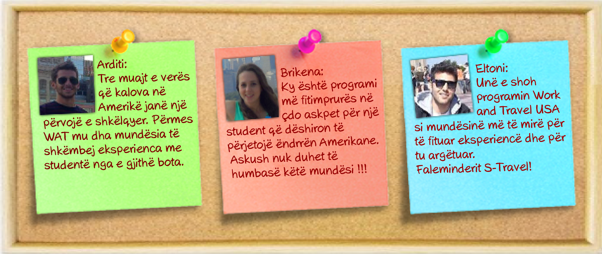

Work and Travel (WAT) USA
Çka është Work and Travel (WAT) USA?
Është program për shkëmbim kulturor, i miratuar nga Departamanti i Shtetit të SHBA-ve (State Department) që ju mundëson studentëve të rregullt të punojnë dhe argëtohen në SHBA gjatë periudhës Qershor-Tetor (3 muaj punë, 1 muaj shëtitje në gjithë SHBA-te)
Çfarë ofron programi WAT?
- Të drejtën për të punuar 4 muaj në periudhen Qershor-Tetor
- Sigurim të vendit të punës nga punëdhënës të kontrolluar
- Mundësi për të gjetur punë të dytë apo orë shtesë
- Të drejtë për qëndrim turistik për një muaj, pas muajit të katërt
Qëllimi i programit është:
- Që tju mundësoj shkëmbim kulturor më shumë miq të rinj internacional
- Të njihni nga afër mënyren e jetesës dhe të punës të një amerikani
- Të zhvillosh aftësitë për tu gjindur në situata të ndryshme
Kush ofron vendin e punës?
Vendet e punës ofrohen nga sponsorët e Work and Travel, të cilët kanë të drejtë të japin leje punë për të gjithë ata që marrin pjesë në programin Work and Travel. Ata janë të obliguar që tju ofrojnë mbështetje gjatë qëndrimit tuaj në SHBA. Sponsorët poashtu mbikqyrin raportin punëdhënës-student dhe respektimin e kushteve të programit të caktuar nga Departamenti i Shtetit të Amerikës.
Llojet e punëve që nuk keni të drejtë ti punoni:
Në rast se pajiseni me vizën J-1, atëherë ka disa lloje te punëve të cilat nuk keni të drejtë ti punoni qoftë si Independent apo punë të dytë. Për më shumë informacion kliko këtu.
Independent
Nëse zgjidhni këtë program, ju keni munësi që të caktoni vetë vendin e punës. Për shembull, nëse keni marë pjesë disa herë me WAT dhe njihni ndonjë punëdhënës, apo nëse shoku apo i afërmi juaj mund tjua sigurojnë punën e cila është brenda kritereve të J-1 vizës, atëhere programi Independent është i duhuri për ju.Obligimi ynë është që të kontrollojmë dhe konfirmojnë kompaninë, vendin e punën ku dëshironi të shokoni. Poashtu ne do të monitorojmë edhe procesin e kompletimit të dokumentave për të miratuar bashkëpunimin në mes jush dhe punëdhënësit tuaj.
Me këtë program përfitoni:
- DS 2019 formularin – që vjen direkt nga shtetet e bashkuara të Amerikës, me të cilin do të keni të drejtë të futeni për vize J-1 në ambasadë. Kjo formë e lëshuar nga sponzor kompania në SHBA, ju mundëson të punoni legalisht për 3 muaj.
- Sigurim shëndetsor - i cili mbulon të gjitha shpenzimet emergjente shëndetësore gjatë qëndrimit në SHBA. Ky sigurim do tju mbulojë vetëm gjatë periudhës që ju punoni.
- Para-orientim në Shqipëri – ku do të merni informata të rëndësishme mbi rregullat e programit dhe mbi karakteristikat e jetës dhe punës në Amerikë.
- Asistencë për të kompletuar gjithë dokumentacionin për në Ambasadën e SHBA-ve
- 24 orë - numër pa pagesë për asistencë dhe mbështetje
- PIN numrin për në ambasadë
- SEVIS (Taksë e qeverisë së SHBA-ve)
- Përgaditjen e dokumentacionit për aplikim për Social Security Number në USA (Nevoitet për punë të dytë dhe llogaritjen e taksave)
- Intervista parprake (Screening Interview)
Premium
Nëse nuk keni mundësi që vendin e punës ta zgjidhni vetë atëhere është obligmi ynë që ne tju sjellim atë që dëshironi dhe që është brenda kritereve te vizës J-1. Me programin Premium ne ju sigurojmë vendin e punës, duke ju ofruar mundësi zgjedhjeje. Varësisht nga kompania, punët paguhen nga $7.35 - $12 për orë. Si për programin Premium ashtu edhe për Premium Gold, punët janë të ndryshme, për shembull: hotele, restorante, resorte, parqe argëtimi etj dhe ofrohen në disa shtete të SHBA-ve si: New York, New Jersey, South Carolina, Texas, California, Winsconsin, Massachusetts etc.
Përveç eksperiencës unike dhe të paharueshme, ju përfitoni ofertën e punës, e cila përfshin:
- Informacion për kompaninë për të cilën do të punosh (adresën, telefonin, e-mailin, persona për kontakt)
- Informacion për llojin e punës të cilën do ta punosh, me një përshkrim për përgjegjësitë tuaja.
- Informacion për vendin ku do të jetosh dhe punosh.
- Akomodim – të siguruar detyrimisht parakohe, në përputhje me punën tuaj.
- DS 2019 formularin – që vjen direkt nga shtetet e bashkuara të Amerikës, me të cilin do të keni të drejtë të futeni për vize J-1 në ambasadë. Kjo formë e lëshuar nga sponzor kompania në SHBA, ju mundëson të punoni legalisht për 3 muaj.
- Sigurim shëndetsor - i cili mbulon të gjitha shpenzimet emergjente shëndetësore gjatë qëndrimit në SHBA. Ky sigurim do tju mbulojë vetëm gjatë periudhës që ju punoni.
- Para-orientim në Shqipëri – ku do të merni informata të rëndësishme mbi rregullat e programit dhe mbi karakteristikat e jetës dhe punës në Amerikë.
- Asistencë për të kompletuar gjithë dokumentacionin për në Ambasadën e SHBA-ve
- 24 orë - numër pa pagesë për asistencë dhe mbështetje
- PIN numrin për në ambasadë
- SEVIS (Taksë e qeverisë së SHBA-ve)
- Përgaditjen e dokumentacionit për aplikim për Social Security Number në USA (Nevojitet për punë të dytë dhe llogaritjen e taksave)
- Intervista parprake (Screening Interview)
Premium Gold
Këtë vit po sjellim diçka edhe më ndryshe tek studentët shqiptar. Për të gjithë ata që eksperiencës të paharueshme dëshirojnë ti shtojnë shëtitjen në qytetin e New York-ut, Premium Gold është programi i duhur. Dallimi i vetëm me programin Premium është se me një kosto shtesë prej 50 euro, pjesmarësit e Premium Gold do kenë mundësi të qëndrojnë 2 netë dhe 3 ditë ne hotelin New Yorker i cili gjendet ne qendër të Manhattan, fare pranë Times Square. Poashtu ata do të kenë të garantuar transportin nga aeroporti deri në Hotel.
Beneficionet nga ky program jane poato që listohen tek paketa Preium por i shtohet:
- Transferimi nga aeroporti në hotel në New York.
- 2 Netë/ 3 Ditë qëndrim të paguar në hotel New Yorker
- Orientim për programin edhe në USA
- Aplikim i organizuar për SSN
- Leksion për të drejtat dhe obligimet e pjesmarësit
- Ligjet dhe rregullat në SHBA
- Si të sillemi në pozicionin përkates të punës
- Procedurat që duhen ndjekur në raste problemesh ku nevojitet kujdesi i Sponzorit
- Si të telefonojmë dhe si të hapim një konto bankare
- Rregullat e SEVIS, etj
